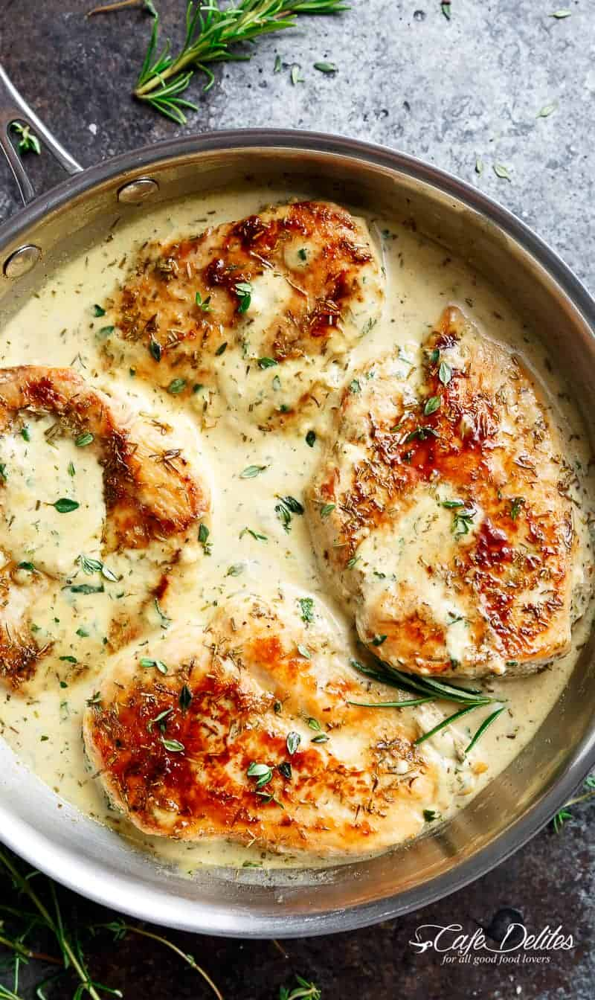

quick & easy creamy herb chicken

So thick and creamy, this creamy herb sauce pairs perfectly over rice, pasta, or Creamy Mashed Potatoes.
To keep the entire meal low carb, try it over cauliflower mash!
Ingredients
For the Chicken:
- 4 chicken breasts (pounded 1/2-inch thin)
- 2 teaspoons each of onion powder and garlic powder
- 1 teaspoon fresh chopped parsley
- 1/2 teaspoon each of dried thyme and dried rosemary*
- salt and pepper , to season
For the Sauce:
- 4 cloves garlic , minced (or 1 tablespoon minced garlic)
- 1 teaspoon fresh chopped parsley
- 1/2 teaspoon each of dried thyme and dried rosemary
- 1 cup milk (or half and half)*
- Salt and freshly ground black pepper , to taste
- 1 teaspoon cornstarch mixed with 1 tablespoon water , until smooth
Instructions
- Coat chicken breasts with the onion and garlic powders and herbs. Season generously with salt and pepper.
- Heat 1 tablespoon of oil a large pan or skillet over medium-high heat and cook chicken breasts until opaque and no longer pink inside (about 5 minutes each side, depending on thickness). Transfer to a plate; set aside.
- To the same pan or skillet, heat another 2 teaspoons of olive oil and sauté garlic, with parsley, thyme and rosemary, for about 1 minute, or until fragrant.
- Stir in milk (or cream); season with salt and pepper, to taste.
- Bring to a boil; add the cornstarch mixture to the centre of the pan, quickly stirring, until sauce has thickened slightly. Reduce heat and simmer gently for a further minute to allow the sauce to thicken more.
- Return chicken to the skillet. Sprinkle with extra herbs if desired. Serve immediately.
Notes
*If you don't like Thyme or Rosemary, substitute these with Basil and Oregano, or use Tarragon.**For a dairy free option, I find Cashew milk the best in flavour. You can also use almond milk or rice milk. Yes, heavy cream can be substituted!
NUTRITION
Calories: 176kcal | Carbohydrates: 5g | Protein: 26g | Fat: 4g | Saturated Fat: 1g | Cholesterol: 78mg |
Sodium: 158mg | Potassium: 520mg | Sugar: 3g | Vitamin A: 135IU | Vitamin C: 2.6mg | Calcium: 84mg | Iron: 0.8mg